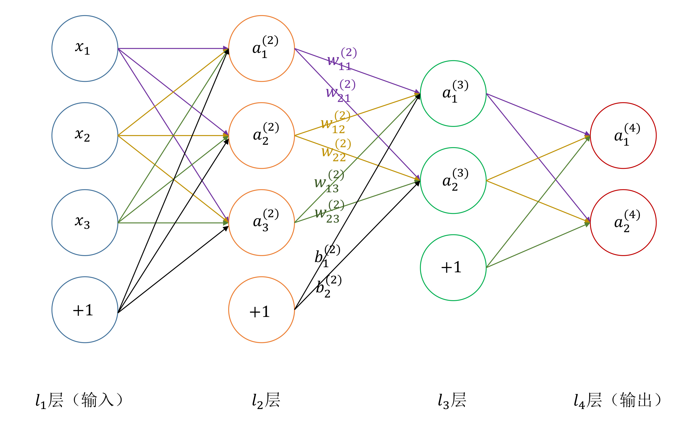
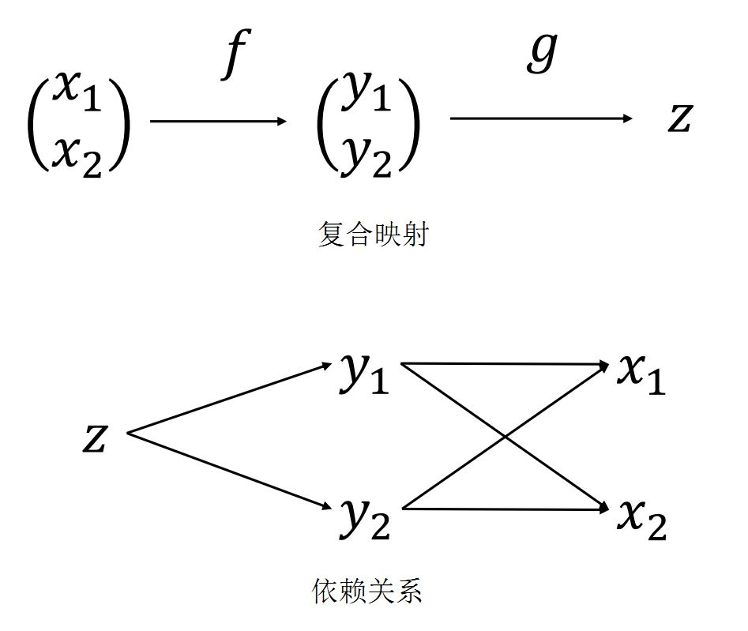

9. 反向传播
{kind=link}
符号 |
含义 |
|---|---|
\(n\) |
网络层数 |
\(C_l\) |
第 \(l\) 层神经元个数（不包括偏置） |
\(g(x)\) |
激活函数 |
\(w^{(l)}_{ji}\) |
第 \(l\) 层第 \(i\) 个神经元与第 \(l+1\) 层第 \(j\) 个神经元的连接权重 |
\(b^{(l)}_i\) |
第 \(l+1\) 层第 \(i\) 个神经元的偏置 |
\(z^{(l)}_i\) |
第 \(l\) 层第 \(i\) 个神经元的输入 |
\(a^{(l)}_i\) |
第 \(l\) 层第 \(i\) 个神经元的激活值 |
\(\delta^{(l)}_i\) |
第 \(l\) 层第 \(i\) 个神经元的误差（error） |
\(y_j\) |
标签第 \(j\) 维（第 \(j\) 类） |
\(\mathcal{L}_{w,b}(x)\) |
损失函数，简称 \(\mathcal{L}\) |
\(x\) |
训练样本 |
\(m\) |
小批量训练样本个数 |
9.1. 链式法则
{kind=link}
\(z = g \circ f(x_1, x_2)\)
\[\begin{split}\frac{\partial{z}}{\partial{x_1}} &=\ \frac{\partial{z}}{\partial{y_1}} \frac{\partial{y_1}}{\partial{x_1}} + \frac{\partial{z}}{\partial{y_2}} \frac{\partial{y_2}}{\partial{x_1}} \\ \frac{\partial{z}}{\partial{x_2}} &=\ \frac{\partial{z}}{\partial{y_1}} \frac{\partial{y_1}}{\partial{x_2}} + \frac{\partial{z}}{\partial{y_2}} \frac{\partial{y_2}}{\partial{x_2}}\end{split}\]\(u = f(x, y(x), z(x))\) 。 \(\frac{du}{dx}\) 表示全导数， \(\frac{\partial{u}}{\partial{x}}\) 表示偏导数。
\[\frac{du}{dx} = \frac{\partial{u}}{\partial{x}} + \frac{\partial{u}}{\partial{y}} \frac{dy}{dx} + \frac{\partial{u}}{\partial{z}} \frac{dz}{dx}\]\(u = f(x, y(x,t), z(x,t))\)
\[\frac{\partial{u}}{\partial{x}} = \frac{\partial{f}}{\partial{x}} + \frac{\partial{f}}{\partial{y}} \frac{\partial{y}}{\partial{x}} + \frac{\partial{f}}{\partial{z}} \frac{\partial{z}}{\partial{x}}\]
9.2. 前向传播
\[\begin{split}z^{(l+1)}_i &= \ b^{(l)}_i + \sum_{j=1}^{C_l}w^{(l)}_{ij}a^{(l)}_j, \\
g(t) &= \ \frac{1}{1 + e^{-t}}, \\
g^{\prime}(t) &= \ (1 - g(t))g(t) , \\
a^{(l)}_i &= \ g(z^{(l)}_i).\end{split}\]
误差 定义为：
\[\delta^{(l)}_i = \ \frac{\partial{\mathcal{L}}}{\partial{z^{(l)}_i}}\]
9.3. 误差反向传播
MSE （Mean Squared Error）
对每一个样本，损失为：
\[\mathcal{L} = \frac{1}{2} \sum_{j=1}^{C_n}(y_j - a^{(n)}_j)^2.\]
最后一层的误差：
\[\begin{split}\delta^{(n)}_i &= \ \frac{\partial{\mathcal{L}}}{\partial{z^{(n)}_i}} \\
&= \ \frac{1}{2} \frac{\partial{\bigg [ \sum_{j=1}^{C_n}(y_j - a^{(n)}_j)^2 \bigg ]}}{\partial{z^{(n)}_i}} \\
&= \ \frac{1}{2} \frac{\partial{\bigg [ (y_i - g(z^{(n)}_i))^2 \bigg ]}}{\partial{z^{(n)}_i}} \\
&= \ - (y_i - g(z^{(n)}_i)) g^{\prime}(z^{(n)}_i)\end{split}\]
递推前层误差：
\[\begin{split}\delta^{(l)}_i &= \ \frac{\partial{\mathcal{L}}}{\partial{z^{(l)}_i}} \\
&= \ \sum_{j=1}^{C_{l+1}} \frac{\partial{\mathcal{L}}}{\partial{z^{(l+1)}_j}} \frac{\partial{z^{(l+1)}_j}}{\partial{a^{(l)}_i}} \frac{\partial{a^{(l)}_i}}{\partial{z^{(l)}_i}} \\
&= \ \sum_{j=1}^{C_{l+1}} \frac{\partial{\mathcal{L}}}{\partial{z^{(l+1)}_j}} \frac{\partial{\left ( b^{(l)}_i + \sum_{k=1}^{C_l}w^{(l)}_{jk}a^{(l)}_k \right )}}{\partial{a^{(l)}_i}} \frac{\partial{a^{(l)}_i}}{\partial{z^{(l)}_i}} \\
&= \ \sum_{j=1}^{C_{l+1}} \delta^{(l+1)}_j w_{ji}^{(l)} g^{\prime}(z^{(l)}_i) \\
&= \ g^{\prime}(z^{(l)}_i) \sum_{j=1}^{C_{l+1}} \delta^{(l+1)}_j w_{ji}^{(l)}\end{split}\]
权重和偏置的梯度：
\[\begin{split}\frac{\partial{\mathcal{L}}}{\partial{w_{ij}^{(l)}}} &= \ \frac{\partial{\mathcal{L}}}{\partial{z^{(l+1)}_i}} \frac{\partial{z^{(l+1)}_i}}{\partial{w_{ij}^{(l)}}} \\
&= \ \delta^{(l+1)}_i \frac{\partial{z^{(l+1)}_i}}{\partial{w_{ij}^{(l)}}} \\
&= \ \delta^{(l+1)}_i \frac{\partial{\left ( b^{(l)}_i + \sum_{k=1}^{C_l}w^{(l)}_{ik}a^{(l)}_k \right )}}{\partial{w_{ij}^{(l)}}} \\
&= \ \delta^{(l+1)}_i a^{(l)}_j \\
\frac{\partial{\mathcal{L}}}{\partial{b_i^{(l)}}} &= \ \delta^{(l+1)}_i\end{split}\]
- 梯度下降
权重更新
\[w_{ij}^{(l)} \leftarrow w_{ij}^{(l)} - \alpha \times \frac{1}{m} \sum_x \frac{\partial{\mathcal{L}}}{\partial{w_{ij}^{(l)}}} = w_{ij}^{(l)} - \frac{\alpha}{m} \sum_x \delta^{(l+1)}_i a^{(l)}_j\]偏置更新
\[b_i^{(l)} \leftarrow b_i^{(l)} - \alpha \times \frac{1}{m} \sum_x \frac{\partial{\mathcal{L}}}{\partial{b_i^{(l)}}} = b_i^{(l)} - \frac{\alpha}{m} \sum_x \delta^{(l+1)}_i\]
Cross Entropy （交叉熵）
损失函数为：
\[\begin{split}\mathcal{L} = - \sum_{j=1}^{C_n} y_j \ln \hat{y}_j, \\
y_j \in \{ 0,1 \}, \\
\hat{y}_j = \mathrm{softmax}(\mathbf{a}^{(n)}, j) = \frac{e^{a^{(n)}_j}}{\sum_{k=1}^{C_n} e^{a^{(n)}_k}}.\end{split}\]
softmax 偏导为：
$$
\frac{\partial{\hat{y}_j}}{\partial{a^{(n)}_i}} =
\begin{cases}
- \hat{y}_j \hat{y}_i & & i \ne j \\
\hat{y}_i (1 - \hat{y}_i) & & i = j
\end{cases}
$$
另外，由链式法则（Chain Rule）：
\[\begin{split}\frac{\partial{\mathcal{L}}}{\partial{z^{(n)}_i}} &= \ \frac{\partial{\mathcal{L}}}{\partial{a^{(n)}_i}} \frac{\partial{a^{(n)}_i}}{\partial{z^{(n)}_i}} \\
\frac{\partial{\mathcal{L}}}{\partial{a^{(n)}_i}} &= \ \sum_{j=1}^{C_n} \frac{\partial{\mathcal{L}}}{\partial{\hat{y}_j}} \frac{\partial{\hat{y}_j}}{\partial{a^{(n)}_i}} \\
\frac{\partial{\mathcal{L}}}{\partial{\hat{y}_j}} &= \ - \frac{y_j}{\hat{y}_j}\end{split}\]
可推得：
\[\begin{split}\frac{\partial{\mathcal{L}}}{\partial{a^{(n)}_i}} &= \ \sum_{j=1}^{C_n} \frac{\partial{\mathcal{L}}}{\partial{\hat{y}_j}} \frac{\partial{\hat{y}_j}}{\partial{a^{(n)}_i}} \\
&= \ \frac{\partial{\mathcal{L}}}{\partial{\hat{y}_i}} \frac{\partial{\hat{y}_i}}{\partial{a^{(n)}_i}} + \sum_{j \ne i}^{C_n} \frac{\partial{\mathcal{L}}}{\partial{\hat{y}_j}} \frac{\partial{\hat{y}_j}}{\partial{a^{(n)}_i}} \\
&= \ - \frac{y_i}{\hat{y}_i} \times \hat{y}_i (1 - \hat{y}_i) + \sum_{j \ne i}^{C_n} - \frac{y_j}{\hat{y}_j} \times \left ( - \hat{y}_j \hat{y}_i \right) \\
&= \ - y_i \times (1 - \hat{y}_i) + \sum_{j \ne i}^{C_n} y_j \times \hat{y}_i \\
&= \ - y_i + \sum_{j=1}^{C_n} y_j \times \hat{y}_i \\
&= \ - y_i + \hat{y}_i\end{split}\]
最后一层的误差：
\[\begin{split}\delta^{(n)}_i &= \ \frac{\partial{\mathcal{L}}}{\partial{z^{(n)}_i}} \\
&= \ \frac{\partial{\mathcal{L}}}{\partial{a^{(n)}_i}} \frac{\partial{a^{(n)}_i}}{\partial{z^{(n)}_i}} \\
&= \ (- y_i + \hat{y}_i) g^{\prime}(z^{(n)}_i)\end{split}\]
9.4. 参考资料
反向传播公式推导
神经网络–反向传播详细推导过程